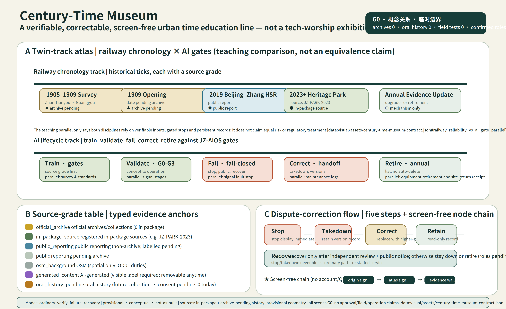

Entry, walking, commuting, rest, service, and leaving stay open; staffed stations, screen-free nodes, and a complete non-AI path remain available.
Twin-track Jing-Zhang: the front-stage spatial master plan
Read the space before the governance:
the continuous civic track is an ordinary public-life base that anyone
can enter; the intermittent proof track is a voluntary, announced,
bounded, removable overlay and must not be read as continuous
construction or an already-built test facility. The three switchyards
support co-creation, verification, and publication; the failure siding
supports stopping, staffed takeover, detour, and recovery. No account,
QR code, or AI is required.

It appears only in voluntary, announced, approved, accountable windows; the overlay is intermittent, stoppable, removable, and does not occupy daily movement.
Origin Community receives co-creation and review; Zhongzhiyuan handles offline verification; Dazhongsi handles public release and staffed service. All three are conceptual roles of existing provisional key areas.
The ordinary–verification–failure–recovery states are readable; six signals—entry, time, state, human, source, and exit—explain what can happen now.
| Ordinary | Verification | Failure / stop | Recovery |
|---|---|---|---|
| The daily track is open; proof equipment is off. | Enter an announced window voluntarily; the daily track and non-AI comparator remain beside it. | Automation stops; staff take over, the failure siding opens, and the public may detour or leave. | Remain G0 until correction, accountable handoff, and independent retest close; then return to ordinary use. |
Structured backlink: visual/assets/key-area-evidence-matrix.json#twin_track_frontend_contract. The contract records conceptual spatial relations, a public journey, time windows, and maturity guards only; it adds no scene ID, geometry, or field result. JZ-AIOS, G0–G3, T-02, evidence gates, and the rights ledger remain the back-stage governance kernel in the following sections.
Non-AI-First Public City: Seven Rights and Two Paths to the Same Task
Provide a complete technology-independent service before optional AI:
people enter through a physical rights legend and complete the basic task through the primary paper, oral, physical-wayfinding, and staffed route. AI is an optional branch only after plain-language disclosure and separate voluntary consent. Both routes rejoin the same outcome, cost rule, accountable queue, appeal and correction rights, and stop/recovery process. “Permanent” means a design right that cannot be removed from a future service window, not a claim of current staffing or approval.

No account/QR, complete non-AI path, continuous accessibility intent, staffed handoff, consent withdrawal, appeal/correction, and screen-free quiet. Field accessibility compliance still requires survey, co-testing, and professional review.
Zhongzhiyuan centres equipment isolation and takeover recovery; Origin centres screen-free learning, oral/paper withdrawal, and resident daily use; Dazhongsi centres four-way commuting, source correction, and a dual-entry staffed desk.
Older people, disabled/reduced-mobility users, low-digital-literacy users, and people without an account or smart device each record completion, abandonment, breaks, waiting, handoff, and rights outcomes. No overall average may hide exclusion.
A hard failure stops automation and grants AI no continuation privilege. The ordinary route and non-AI task remain, or a safe refusal and accountable handoff are provided. Stay stopped or retire until independent retest and place restoration close.
| Auditable document coverage | Reality counts | Still required | Current decision |
|---|---|---|---|
| 7 rights · 3 place contracts · 4 groups · 6 journeys | operators 0 · staff 0 · real interactions 0 · known group results 0 | sites, windows, duty bearers, accessibility review, samples, thresholds, field records, independent retest | all G0; no maturity upgrade |
Machine-auditable entry: visual/assets/non-ai-parity-contract.json and key-area-evidence-matrix.json#non_ai_first_public_city_contract. Provisional geometry, existing scene IDs, and the not_fully_cleared rights status are unchanged.
Maintenance urbanism: how an ordinary issue returns to daily life
AI is not an entry condition:
residents may raise an issue through ordinary, staffed, or non-AI routes. The “issue shell” and “work-order shell” are blank structures, not collected complaints or dispatched work orders. No real work order exists before responsibility is accepted; continuation follows independent recheck. Repeated failure, no safe staffed route, or inability to restore daily use requires stopping and retirement review.

The order is inspect → clean/adjust → repair → replace a repairable component → discuss procurement last. The diagram shows no budget number, procurement list, or built facility.
Maintenance, cleaning, staffed service, curation, and accessibility co-testing enter the responsibility and recheck chain. These are required role types, not confirmed personnel.
Real complaints, work orders, budgets, people, repairs, rechecks, effects, approvals, and operations are all 0. Planned and actual human hours are unknown. Every scene remains G0.
Machine-auditable entry: visual/assets/key-area-evidence-matrix.json#maintenance_urbanism_contract. The contract organises the existing 12 scenes and eight projects only; it adds no scene, geometry, maturity, approval, personnel, or real service.
AI Urban Metabolism Ledger: Show the Whole Burden Before Claiming “Greener”
Field coverage is not environmental performance:
all twelve existing G0 scenes have seven-resource passports, but no valid task denominator and no measured energy, compute, equipment life, or human minutes exist. Vendors, responsibility acceptance, procurement, and exit terms are unconfirmed. Industry averages, nameplates, simulations, and vendor material cannot become project data.

Compute, energy, equipment/material, data, human review, vendor dependency, and failure/exit cost share one task denominator. Reporting only server or model load fails.
Zhongzhiyuan foregrounds equipment/battery, incident records, and takeover; Origin foregrounds withdrawal, shared kit, safeguarding, and clearance; Dazhongsi foregrounds route/source updates, staffed desks, and commuting.
Retain, repair/reuse, redeploy, supplier return, compliant disposal, data/log closure, and restoration of the ordinary place and same-task service each need accountable evidence.
not_measured, external_confirmation_required, and related states require reasons and replacement evidence. 100% field coverage cannot mean savings or readiness.
| Design coverage | Reality evidence | Hard NO-GO | Authorization boundary |
|---|---|---|---|
| 12 scenes · 7 resources · 7 exit destinations | valid denominators 0 · measured energy 0 · measured compute 0 · human-minute scenes 0 · vendors 0 | server-only accounting, borrowed averages, omitted labour/place, no export/repair/exit, weaker ordinary path | PASS is not deployment, site, procurement, maturity, rights, or environmental authorization |
Machine-auditable entry: visual/assets/urban-metabolism-ledger.json and key-area-evidence-matrix.json#urban_metabolism_contract. Geometry, existing scene IDs, G0, and not_fully_cleared are unchanged.
Antifragile failure governance: synchronize three carriers without exceeding authority
Restore ordinary use before discussing continuation:
pause, review, recovery, withdrawal, or retirement prepares synchronized writebacks for the scene passport, civic timetable, and evidence matrix. Any missing or conflicting carrier fails closed to the conservative state. Runtime, G0–G3, authorization, and service cannot collapse into one colour. T-02 is a synthetic governance replay, not a real incident or field recovery.

Safety/access, rights/consent, source/version, service/handoff, evidence/decision, and place/exit determine stop intensity. Publish task, state, correction, and role—not identity, sensitive narrative, or personal data.
The passport stores back-stage facts, the timetable says what works now, and the evidence matrix says how a claim is held, narrowed, corrected, or exited. Missing one prevents restart.
Oral, paper, and staffed entry require no account, QR, or AI. A receipt must record hold, narrowing, correction, retest, withdrawal, retirement, or reasoned no change.
Repeated hard failure, no stop authority, unrestored ordinary path, unclosed rights, unreproducible claim, or exit without a destination triggers active retirement and component/data/service/place receipts.
| Design contract | Reality counts | Explicit unknowns | Permanent authorization boundary |
|---|---|---|---|
| 6 failure classes · 5 writeback events · 8 human role types · 4 separate state axes | real failures 0 · confirmed stop authorities 0 · public corrections 0 · real independent retests 0 · retirements 0 | stop-to-handoff time unknown · ordinary-use recovery time unknown · responsibility and thresholds unconfirmed | file checks, synthetic PASS, retest, or restoration acceptance authorize no trial, procurement, construction, or deployment |
Machine-auditable entry: visual/assets/failure-governance-register.json and key-area-evidence-matrix.json#antifragile_failure_governance_contract. Geometry, existing SCENE/JZ/T IDs, G0, and not_fully_cleared are unchanged.
Climate-Resilience Proof Corridor: Ordinary Blue-Green Baseline First
Green ratio is not thermal comfort, and sensors are not landscape or water staff:
the continuous ordinary route, shade and reachable-rest intent, static non-AI notice, manual inspection, and stormwater/ecological-maintenance clear zone form the complete daily service first. AI-assisted prompting and the Xiaoyue River observation wing remain only a future possibly approved, intermittent, refusible, stoppable, removable overlay. The wing is a concept relationship—not an exact riverbank site, existing building, statutory setback, or built facility.

Ordinary movement, physical cues, shade/rest intent, static notice, spoken or paper handoff, and direct exit depend on no account, QR, screen, sensor, model, network, or AI.
Static non-AI is primary. The optional branch needs the same future human owner, action, handoff, appeal, and exit. A stale source, branch conflict, missing confirmation, or inaccessible output stops assistance only.
Infiltration, overflow, landscape/water inspection, and ecology take priority. Equipment, fixings, queues, and activities stay out. Extreme weather stops activity; sensors never replace field judgment.
Components, fixings, power/network, data/service, signs/queues, and surfaces close one by one under independent acceptance. Place and same-task service remain complete without devices; recovery does not advance G0.
| Future measurement | Typed evidence anchor | Current value | Cannot prove |
|---|---|---|---|
| Continuous shade / reachable rest | surveyed path or node + dated observation / accessibility co-test | unknown | green ratio and drawing coverage cannot prove comfort or access |
| Manual inspection / prompt error | versioned route log + preregistered same-task event + independent retest | 0 real events | templates and synthetic PASS cannot prove staffing or accuracy |
| Stormwater maintenance / stop / device exit | official inventory + event timestamp + complete place-restoration receipt | unknown / 0 receipts | concept section cannot prove hydraulic, municipal, sponge, or recovery performance |
Machine-auditable entry: visual/assets/climate-resilience-contract.json and key-area-evidence-matrix.json#climate_resilience_corridor_contract. Geometry, existing SCENE/JZ/T IDs, G0, back-stage governance, and not_fully_cleared remain unchanged.
The Century-Time Museum: A Verifiable, Correctable, Screen-free Time Education Line
Historical facts are not metaphors; generated content must be labelled:
The Jing-Zhang railway's survey, opening, HSR, heritage park juxtaposed with AI's training, validation, failure, correction, and retirement as a correctable time-education line; every fact carries a source grade, disputed content can be stopped/taken-down/corrected/retained/recovered, all nodes require no account/QR/screen/AI.

Five historical objects, each annotated with source grade (official archive / in-package source / public reporting / pending archive / OSM background / generated content / oral history pending), allowable uses and unknowns one-to-one.
Stop → takedown → correct → retain version → recover; independent review + public notice required before recovery, otherwise stay down or retire actively; stop/takedown never blocks ordinary paths or staffed services.
Origin sign → atlas sign → evidence wall; no account, QR code, screen, or AI required throughout; digital enhancement is optional supplement only, never a comprehension barrier.
Pre-collection contract state; consent can be withdrawn at any time, content removed from public side after withdrawal, version retained for internal minimum audit only; no fabricated interview records.
| Cultural Metric | Design Status | Real-world Verification | Forbidden Misreading |
|---|---|---|---|
| Source verifiability rate | unknown | Field observation + independent retest | Field coverage ≠ real-world outcome |
| Generated-content label coverage | unknown | Manual check + sampling audit | Design coverage ≠ real label enforcement |
| Dispute-handling time | unknown | Process log + timestamp | Template ≠ real response speed |
| Screenless tour completion rate | unknown | Field or controlled test | Design field coverage ≠ actual completion |
| Annual retired-content count | 0 | Retirement list + receipt | Mechanism defined ≠ real retirement events |
Machine-auditable entry: visual/assets/century-time-museum-contract.json. Geometry, existing SCENE/JZ/T IDs, G0, and not_fully_cleared remain unchanged.
Naming and review path
Spatial interfaces use I01—I06; G0—G3 is reserved for scenario maturity; GeoJSON GATE-01—GATE-06 remains a machine-compatibility identifier only. Review path (a conceptual protocol, not approval or results): built-park baseline → public problem → same-task non-AI baseline → G1 shadow test → stop/recover → independent retest → upgrade or exit. Every node remains at G0.
Define failure before discussing advancement
Each of the 12 scenes now has a G1 preregistration structure covering
the same-task non-AI comparator, one primary metric and denominator,
sample frame, collection window, hard no-harm rule, stop and recovery,
and independent retest. The 12/12 figure is document-field coverage,
not a test result. Completed preregistrations, approved windows, field
executions, and known results all remain 0; every node remains at G0.
Use reversible public space to compare whether an AI increment displaces ordinary use offline; this is a concept protocol, with no approval and no field result.
It fixes five questions plus source closure, stop/recovery, and human-handoff contracts. One PII-free synthetic governance replay is complete: 10/10 exact decision matches; four distinct declared stop events map exactly to their respective recovery actions; and 13/13 negative mutation controls cover contract unknown fields, answer-mode drift, complete source closure, canonical RACI closure, real-service authorization, and summary-count tampering and failed closed as expected. Substantive answers, model/API/real-service calls, field tests, approvals, accountable-party confirmations, real independent retests, and G1 outcomes remain 0 or unknown; the gate stays G0. A provisional boundary cannot support an exact parcel, area, or approval claim.
g0-offline-enterprise-service-baseline.json fixes the
contract; t02-g0-g1-replay-result.json fixes the
synthetic result.
Compare the same task with staffed delivery; stop on a collision, boundary breach, failed physical stop, or broken takeover chain.
g1-preregistration-register.json holds all 12 full
records. Accountable parties, exact sites, samples, windows, and
field-derived thresholds must be confirmed before testing and cannot
be filled in by this proposal.
After 6 August 2026: start from the open park
Public reporting says Phase II of the Jing-Zhang Railway Heritage Park
opened on 6 August 2026. The proposal therefore no longer presents the
continuous green corridor, basic slow-mobility links, or all-age
recreation as works yet to be created. It adds only a reversible
service layer whose net benefit must be proven. Desk research is not a
site visit, an as-built survey, or approval evidence.
| Publicly reported baseline | Only proposed increment | Required before G1 |
|---|---|---|
| An approximately 9 km green corridor, a community-oriented south segment, a nature-oriented north segment, nine reported side-street links, and a fishbone slow-mobility network | Recast the six spatial interfaces as audit/service types; compare each AI increment with a non-AI baseline through scenario passports | A 30-day post-opening field audit, exact siting, continuous accessibility, commuter-use conflicts, and quiet-time conflicts |
| All-age activity, railway-heritage reuse, and sponge facilities are already publicly described | Do not duplicate facilities; test guidance, co-testing, failure disclosure, and staffed service only where ordinary use is not displaced | No net loss of public space, manual fallback, removable recovery, community co-testing, and independent retesting |
site-grounding-register.json records source dates, use
limits, and field-verification needs. Completed field audits remain
0.
One auditable line, three state stations, two supply wings
The operating loop begins with public problems, moves through co-creation and verification, reaches public release and service, then returns failures and public-value evidence to the next cycle. External districts are optional retest roles, never claimed partners.
Boundary-basis notice: An automated comparison
between the OSM-mapped park and provisional overall-design polygon
PROV-SITE-001 reads 0% overlap and a nearest distance of
about 412.5 m. Both OSM and the provisional polygon are incomplete, so
this reading adjudicates neither, changes no geometry, and is not used
for scoring or precise-area claims. Once an official polygon is
available, all layers, drawings, HTML, and metrics must be
recalculated.
Core innovation: the JZ-AIOS verifiable-scenario operating system
Every scenario moves from G0 concept/offline work to G1 shadow comparison, G2 bounded beta, and only then an approved G3 public operation. The graduation cube requires technical, public-value, and governance maturity at the same time.

Daily, public-learning, bounded-Beta, quiet/screen-free, and offline modes can switch.
Publish problems, protocols, anonymized results, and failures—never raw private data.
Railway engineering history runs beside AI failure-and-correction history, with explicit and metadata labels for generated content.
Problem Season → Open-source Season → Urban Beta Season → Proof Week forms an annual evidence loop.
Three scopes and land-use structure
The 43.6 km² coordinated layer studies collaboration; the approximately 11.4 km² overall layer expresses a conceptual structure; and the three provisional key areas express state stations for further professional deepening. Thirty-six units form a complete partition, while statutory red lines, floor-area ratio, height, and road controls remain unknown.

Three switchyards as distinct public-space prototypes
VERIFY · Zhongzhiyuan parallel proof court
Protect first: public observation edge and non-AI passage.
Switch: opt into announced offline proof through staff; isolation and service edges never cross the daily path.
Return: remove equipment, enclosure, and cables; review surface, planting, sound, and light; no restart before independent retest.
CO-CREATE · Origin Community: one street, two courts, four nodes
Protect first: resident daily street, screen-free staying, and no-account passage.
Switch: opt into either court and withdraw at any node; all event kit stays outside the through-route.
Return: remove screens, amplification, capture, and signs; retain paper and staff; restore both courts to resident use.
PUBLISH · Dazhongsi four-quadrant walk + one hall/one desk
Protect first: four-way commuting, quiet rest, physical wayfinding, and same-task staffed service.
Switch: evidence release stays off-route; stale, conflicting, or failed-handoff service goes offline.
Return: remove release kit, sound, and light; correct and fully retest sources. Directions do not anchor a station site.


Both drawings use one reading order: draw ordinary use first, then add
a stoppable service overlay. The green path remains continuous;
activity, queues, equipment, and cables cannot occupy it.
All three retain the 22:00–07:00 quiet gate: testing, amplification,
and events have no priority, while ordinary paths, screen-free
information, and staffed help remain available.
Zhongzhiyuan, Origin Community, and Dazhongsi form different four-state
systems through equipment isolation, consent withdrawal, and
commute/source correction. All remain G0 concept relationships, and
every restoration status is unknown / not executed.
Drawing entry and evidence boundary: plans,
relationship sections, ground-floor prototypes, and four states are
not to scale; massing is not an existing-building record, and concept
acceptance is not site approval. Exact boundaries, survey/as-built,
ownership, fire, railway protection, municipal, accessibility, and
operations evidence are unavailable; field audits, role confirmations,
approvals, tests, and known results remain 0. Structured backlink:
key-area-evidence-matrix.json#round2_spatial_deepening.
Complete fields do not prove route continuity, removability, or a
successful place restoration.
| Prototype | Continuous ordinary path | Staffed handoff | Fault → recovery | Do not copy / missing evidence |
|---|---|---|---|---|
| PROV-KEY-001 · VERIFY | Observation-edge passage, rest, and appeal; the public never enters the service line | Staffed explanation, refusal, detour, and physical stop | Isolate court → remove kit → review surface/planting/sound/light → independent retest | Physical isolation and service edge; separation, fire/rail, and restoration result unknown |
| PROV-KEY-002 · CO-CREATE | No-account daily passage and screen-free staying; event kit remains off-route | Paper explanation, withdrawable consent, and safeguarding support | Stop capture/matching → remove signs/kit → close consent → return courts to daily use | Paired courts and four withdrawal nodes; actual lanes, hours, and safeguarding owner unknown |
| PROV-KEY-003 · PUBLISH | Four-way commuting, physical wayfinding, quiet rest, and same-task staffed service | Source explanation, staffed task completion, complaints, and error handoff | Take wrong service offline → remove release kit → correct source → full retest | Four-way commuter cross and source ledger; station anchor, desk capacity, and fire/municipal conditions unknown |
AI scenarios: from list to passport
Passport completeness is a machine-readable design-protocol fact, not evidence of approval or deployment. Every node records its minimum data set, provisional geographic boundary, operating-time boundary, potentially affected groups, human takeover, appeal, non-AI option, entry and stop criteria, retest package, and expiry date.
Human-readable scene locations: safety and accessibility: SCENE-001 / 003 / 009 / 010; trusted public services: SCENE-002 / 005 / 011 / 012; public learning and collaboration: SCENE-004 / 006 / 007 / 008. Every group remains a G0 concept, not an approval, deployment, or field result.
| Feature | Scenario | Risk | Gate | Geography | Time | Safeguards |
|---|---|---|---|---|---|---|
SCENE-001 |
Low-speed Delivery Safety Sandbox | R3 | G0_concept_only | AI-ZONE-001_provisional_concept_zone | approved_closed_course_window_only | Named human takeover · appeal route · non-AI option · dated expiry |
SCENE-002 |
Public-space Energy Assistant | R2 | G0_concept_only | AI-ZONE-001_provisional_concept_zone | approved_operations_window_outside_quiet_hours | Named human takeover · appeal route · non-AI option · dated expiry |
SCENE-003 |
Assisted Safety-event Review | R3 | G0_concept_only | AI-ZONE-001_provisional_concept_zone | authorized_shadow_review_window_only | Named human takeover · appeal route · non-AI option · dated expiry |
SCENE-004 |
Public Failure and Correction Archive | R1 | G0_concept_only | AI-ZONE-001_provisional_concept_zone | published_review_sessions_only | Named human takeover · appeal route · non-AI option · dated expiry |
SCENE-005 |
Trustworthy Jing-Zhang Cultural Guide | R1 | G0_concept_only | AI-ZONE-002_provisional_concept_zone | daily_public_information_window_with_manual_curation | Named human takeover · appeal route · non-AI option · dated expiry |
SCENE-006 |
Open-source Collaboration Matching | R2 | G0_concept_only | AI-ZONE-002_provisional_concept_zone | opt_in_co_creation_sessions_only | Named human takeover · appeal route · non-AI option · dated expiry |
SCENE-007 |
Educational Co-testing Workshop | R1 | G0_concept_only | AI-ZONE-002_provisional_concept_zone | supervised_course_session_only | Named human takeover · appeal route · non-AI option · dated expiry |
SCENE-008 |
Climate and Accessibility Co-testing | R1 | G0_concept_only | AI-ZONE-002_provisional_concept_zone | scheduled_inclusive_field_test_outside_extreme_weather | Named human takeover · appeal route · non-AI option · dated expiry |
SCENE-009 |
Accessible Route Assistant | R1 | G0_concept_only | AI-ZONE-003_provisional_concept_zone | public_service_hours_with_live_manual_confirmation | Named human takeover · appeal route · non-AI option · dated expiry |
SCENE-010 |
Slow-mobility Crowding Advisory | R2 | G0_concept_only | AI-ZONE-003_provisional_concept_zone | event_or_peak_window_with_static_fallback | Named human takeover · appeal route · non-AI option · dated expiry |
SCENE-011 |
Enterprise Service Agent | R2 | G0_concept_only | AI-ZONE-003_provisional_concept_zone | staffed_service_desk_hours_only | Named human takeover · appeal route · non-AI option · dated expiry |
SCENE-012 |
Community Health Navigation | R2 | G0_concept_only | AI-ZONE-003_provisional_concept_zone | staffed_information_service_hours_only | Named human takeover · appeal route · non-AI option · dated expiry |
Mobility, slow movement, and blue-green public space
Six I01—I06 spatial interfaces turn cross-corridor stitching into traceable interfaces. The main green spine, six sponge stitches, nine reversible public spaces, and twelve scenario nodes form a line–surface–point network. AI must adapt to urban life: every public node retains manual fallback, non-AI access, quiet hours, and a screen-free default.

Buildings
180 massing prototypes express conceptual intervention capacity, including 135 in the three key areas. They are not an existing-condition survey and create no demolition, storey, total-floor-area, or construction-scale commitment. Retention assessment, adaptive reuse, and new-build candidates all await survey, ownership, structural, and regulatory-plan evidence.
Renewal projects and phase gates
pilot-readiness-register.json assigns conceptual RACI,
approval triggers, prohibited data, incident stop, recovery, community
co-testing, and independent retesting to 8 projects and 3 first-test
protocols. readiness-closure-contract.json converts the
same requirements into nine real-world handoff categories: role
acceptance, approval scope, site/window baseline, prohibited-data
control, stop authority, recovery rehearsal, community co-test,
independent retest, and final decision minute. All 11 records now
expose nine stable closure-artifact IDs, but 99/99 slots remain open,
0 are closed, and all 11 remain G0/NO-GO.
implementation-handoff-matrix.json resolves all 12
preregistration scenes to existing projects or protocols and their
closure records; 12/12 means transfer paths are explicit, while
confirmed accountable organisations, approvals, field tests,
real-world results, and completed independent retests remain 0.
Year windows + evidence gates
| Phase | Entry | Exit | Rollback |
|---|---|---|---|
| Near term: offline and shadow validation | Sources, accountable roles, risk classification, and baselines are complete. | A bounded test can be rolled back safely and passes the public-value gate. | Any major safety, privacy, or accessibility failure. |
| Mid term: bounded urban beta | Independent retesting, community review, and professional review are complete. | The graduation cube is satisfied and a public retest package is produced. | Repeated failure, unanswered appeals, or undelivered public benefit. |
| Long term: relay, scale, correct, or retire | Formal approval and operating resources are explicit. | The annual evidence report confirms scaling, correction, or proactive retirement. | Material change to boundaries, controls, or social impacts. |
The annual protocol is Problem Season → Open-source Season → Urban Beta Season → Proof Week. It publishes successes, failures, corrections, complaints, and proactive retirement together.
Metrics with inherited confidence

Task coverage
agent.1 brand and three areas/two wingsagent.2 ecosystem and factor mechanismsagent.3 scenario passportsagent.4 public space and landmarksagent.5 trustworthy cultural narrativeagent.6 four-season operation
Every task maps to specific prose, Feature IDs, metrics, drawings,
sources, assumptions, and checks. Full evidence is in
compliance_matrix.json,
standard_matrix.json, and
design_depth_matrix.json.
Evidence, checks, and boundaries
task requirements mapped to specific sections, layers, metrics, sources, assumptions, and checks
registered sources with explicit allowed and prohibited uses
declared assumptions and evidence gaps
structured desk observations / completed field audits
G0 readiness records / approved or operating items
package self-checks, including bilingual visual parity and one explicit UNKNOWN rights-release gate
| Check | Result | Meaning |
|---|---|---|
BOUNDARY_TRUST |
PASS | The provisional boundary remains official_boundary=false, low-confidence, and non-statutory; all boundary-dependent metrics inherit LOW confidence. |
KEY_AREAS_TRUST |
PASS | All three required key areas are present and explicitly provisional; none is an official planning boundary or a precise-area basis. |
LAND_USE_TOPOLOGY |
PASS | Thirty-six non-overlapping land-use units cover the provisional submission extent; the final unit absorbs floating-point residue. |
SPATIAL_EVIDENCE |
PASS | Spatial evidence contains 180 massing prototypes, 12 design lines, 10 green spaces, 9 public spaces, 6 gateways, 3 AI service zones, and 12 scenario nodes. |
METRIC_RECALCULATION |
PASS | All known spatial or protocol metrics come from EPSG:4548 geometry calculations or machine-readable property counts; unsupported statutory and operational metrics remain unknown. |
SCENARIO_PROTOCOL |
PASS | All 12 G0 nodes record version, responsibility, risk, minimum data, geographic/time boundaries, affected groups, takeover, appeal, non-AI option, entry/stop criteria, retest package, and dated expiry. |
G0_T02_SYNTHETIC_REPLAY |
PASS | One PII-free synthetic governance replay produced 10/10 exact decisions; four distinct declared stop events mapped exactly to their respective recovery actions; and 13/13 fail-closed mutation controls covered contract, source, canonical RACI, service-authorization, and summary-value closure. It proves no real service or G1 outcome. |
PUBLIC_INTEREST_FALLBACK |
PASS | All 9 public nodes retain non-AI access, manual fallback, quiet hours, and a screen-free default; testing cannot displace ordinary public life. |
TASK_EVIDENCE_SPECIFICITY |
PASS | All 23 task requirements map to specific sections, features, metrics, sources, assumptions, and checks instead of repeating one generic evidence bundle. |
VISUAL_STATIC |
PASS | The offline HTML covers shortcomings, built baseline, overview, scopes, key areas, land use, mobility, blue-green space, buildings, projects, scenarios, metrics, task coverage, checks, sources, and assumptions without remote dependencies. |
PROFESSIONAL_EVIDENCE |
PASS | The proposal cites 6 standards and 15 design-depth items and links all required evidence through the v2 structured-audit contract. |
RISK_AND_SOURCE_BOUNDARIES |
PASS | Project, standard, policy, site, OSM, and case sources record allowed and prohibited uses; collaboration, culture, and scenario protocols remain recommendations. |
PAPER_DIMENSIONS |
PASS | The A3 booklet and A0 boards use true A3/A0 page dimensions with searchable vector titles and annotations. |
All boundaries, key areas, massing, public-space footprints, programs,
schedules, and institutions remain conceptual. Public-web desk
research is not a site survey. Statutory controls, engineering
feasibility, ownership, funding, and operational performance are
unknown until verified by the responsible authorities and
professionals.
Source–asset–rights evidence
Every source reverse-links to schema-constrained rights evidence; unavailable dates, formats, digests, or terms remain explicit unknowns.
Every retained OSM way has a source ID, element ID, and attribution; the fixed query and snapshot digest remain unknown.
Expected manifest paths match unique file-level records; the five coarse groups remain a compatibility view, with final digests pending refresh from final Git blobs.
completed independent file-level clearance audits; overall status remains not_fully_cleared.
RIGHTS-OPEN-01 complete license terms,
RIGHTS-OPEN-02 independent file-level audit, and
RIGHTS-OPEN-03 ODbL obligations all remain P0 open.
Repository review is disclosure-ready, while public display,
professional deepening, and other reuse remain
blocked pending terms and audit. Structural
completeness or a machine PASS is not rights clearance.
submission-use-rights-matrix.json separates announcement
clause 8.1 from repository review, organizer project use, entrant
external display, cross-project reuse, and third-party-component
decisions; applicability to this open Agent call still needs
maintainer or organizer confirmation. Machine-readable contract:
source-rights-evidence.schema.json,
source-rights-evidence.json,
rights-clearance-ledger.json, agent.json,
and manifest.json.
Sources and assumptions
sources.json records 29 sources and their use boundaries
and reverse-links each to rights evidence through a stable
rights_evidence_id. Four public-web records retain
off-package Firecrawl capture digests; fifteen web records have no
content digest. No crawl cache is shipped.
assumptions.json records 13 boundary,
spatial-representation, scenario, field, and rights gaps. OSM is
background only, public reporting is not fieldwork, and every
external-area collaboration remains a proposal rather than an
institutional commitment.